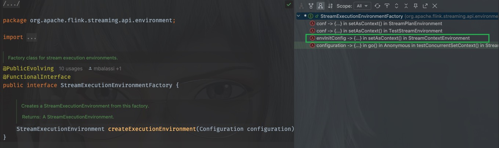

20. [Flink源码]流式工厂模式与配置的延迟绑定
20.1. 前言
在flink的源码中大量使用了设计模式，工厂模式当然不例外，下文从flink源码一处有意思的写法的代码块入手，分析设计模式中工厂模式与函数式方法结合的妙用，以回答我在之前的一篇文章([Flink源码]Flink任务是如何启动的)中提出的问题
为什么要有流式工厂，以及有什么好处
20.2. Flink中的运行环境工厂
在flink中有有一个StreamExecutionEnvironmentFactory工厂类，负责生产StreamExecutionEnvironment，代码是这样的：
/** Factory class for stream execution environments. */
@PublicEvolving
@FunctionalInterface
public interface StreamExecutionEnvironmentFactory {
/**
* Creates a StreamExecutionEnvironment from this factory.
*
* @return A StreamExecutionEnvironment.
*/
StreamExecutionEnvironment createExecutionEnvironment(Configuration configuration);
}
它只有一个方法，并且该类使用了@FunctionalInterface注解标记，所以该接口实际上是一个函数式接口
它的调用发生在org.apache.flink.streaming.api.environment.StreamExecutionEnvironment这个类中，
public static StreamExecutionEnvironment getExecutionEnvironment(Configuration configuration) {
return Utils.resolveFactory(threadLocalContextEnvironmentFactory, contextEnvironmentFactory)
.map(factory -> factory.createExecutionEnvironment(configuration))
.orElseGet(() -> StreamExecutionEnvironment.createLocalEnvironment(configuration));
}
Creates an execution environment that represents the context in which the program is currently executed. If the program is invoked standalone, this method returns a local execution environment, as returned by {@link #createLocalEnvironment(Configuration)}.
这里是从threadLocalContextEnvironmentFactory和contextEnvironmentFactory解析出一个合适的工厂类，使用这个工厂创建一个StreamExecutionEnvironment对象，如果没有合适的工厂没能创建一个合适的StreamExecutionEnvironment对象，则调用createLocalEnvironment方法创建一个LocalStreamEnvironment
进入这个工厂的内部，看看实现类都有哪些，由于是函数式接口，那么实现类自然就是lambda方法，这里主要关注与StreamContextEnvironment，它也是生产环境代码主要执行的类

进入方法内部，工厂是这样被调用的：
final StreamExecutionEnvironmentFactory factory =
envInitConfig -> {
final boolean programConfigEnabled =
clusterConfiguration.get(DeploymentOptions.PROGRAM_CONFIG_ENABLED);
final List<String> programConfigWildcards =
clusterConfiguration.get(DeploymentOptions.PROGRAM_CONFIG_WILDCARDS);
final Configuration mergedEnvConfig = new Configuration();
mergedEnvConfig.addAll(clusterConfiguration);
mergedEnvConfig.addAll(envInitConfig);
return new StreamContextEnvironment(
executorServiceLoader,
clusterConfiguration,
mergedEnvConfig,
userCodeClassLoader,
enforceSingleJobExecution,
suppressSysout,
programConfigEnabled,
programConfigWildcards);
};
initializeContextEnvironment(factory);
这里使用了lambda表达式envInitConfig -> {},此表达式即调用了工厂的createExecutionEnvironment(Configuration configuration)方法，但此时，实际上得到的其实只是一个工厂StreamExecutionEnvironmentFactory，而不是我们需要的StreamExecutionEnvironment
20.3. 细说延迟绑定
为什么说流式工厂做到了延迟绑定能，延迟绑定又是什么意思呢？我不这样写不也可以达到同样的目的吗？
问得好！
延迟绑定的意思是，代码的实际执行被推迟到代码的调用时，而不是在代码被定义时就确定。
可以看到，上面的工厂方法里需要的唯一一个参数是Configuration，当实际执行的时候根据上下文环境得到的Configuration来创建StreamExecutionEnvironment，而不需要在定义时就明确得到了Configuration，这里的Configuration允许在运行时动态更新。
如果不使用这样的方法，想要达到同样的目的的话，需要这样写（一个假想例子）：
传统工厂模式
class ClassicFactory implements StreamExecutionEnvironmentFactory {
private final Configuration baseConfig;
private final ExecutorServiceLoader loader;
// 必须在构造时固定所有依赖
public ClassicFactory(Configuration config, ExecutorServiceLoader loader) {
this.baseConfig = config;
this.loader = loader;
}
@Override
public StreamExecutionEnvironment create(Configuration runtimeConfig) {
// 合并配置的逻辑仍然需要在这里实现
Configuration merged = merge(baseConfig, runtimeConfig);
return new StreamContextEnvironment(loader, merged);
}
}
// 使用时：
Configuration initialConfig = loadInitialConfig();
ExecutorServiceLoader loader = getLoader();
StreamExecutionEnvironmentFactory factory = new ClassicFactory(initialConfig, loader);
// 稍后在业务代码中：
StreamExecutionEnvironment env = factory.create(userConfig);
Lambda工厂
// 直接捕获当前上下文中的 configuration 和 executorServiceLoader
StreamExecutionEnvironmentFactory factory = conf -> {
Configuration merged = new Configuration();
merged.addAll(configuration); // 直接访问外部变量
merged.addAll(conf);
return new StreamContextEnvironment(
executorServiceLoader, // 直接访问外部依赖
merged
);
};
在普通工厂中，一些配置和以来运行时状态的变量(如ExecutorServiceLoader)需要预先显示地指定，由构造参数传递进入类内部进行存储，而lambda工厂则不需要这样，直接在调用时即可以补货上下文环境中的配置变量，这其实说的是lambda工厂的动态上下文环境捕获能力
20.4. 避免工厂子类的冗余
使用普通工厂，需要预先new好工厂的子类实现，必须有localEnv、remoteEnv、clusterEnv等，需要由工厂预先创建好，而使用lambda工厂则不需要这样，lambda工厂只是暂留了生成子类的逻辑，当需要时调用这个逻辑即可快速生成需要的子类，无需预先生成好
20.5. 我的实际应用
在我的业务应用中有这样一段逻辑，需要根据不同的配置，选择不同的执行器去执行包含业务逻辑的代码
public interface Executor {
void execute(SparkSession sparkSession);
}
private static Configuration configuration = null;
public static void main(String[] args) throws Exception {
initSystem(args);
for (String id : configId.split(",")) {
initConfig(Long.parseLong(id));
switch (app) {
case "ck":
Executor checkExecutor = new CheckExecutor(configuration);
checkExecutor.execute(spark);
break;
case "hi":
Executor pipelineExecutor = new ProcessExecutor(configuration);
pipelineExecutor.execute(spark);
break;
case "wi":
Executor flattenExecutor = new FlattenExecutor(configuration);
flattenExecutor.execute(spark);
break;
default:
throw new RuntimeException("You must specify one app name to run this program.");
}
}
}
void initConfig(){
configuration = xxx; //更新configuration的功能模块
}
根据类命名可以联想，在实际传入不同的启动参数时，会进入不同分支，选择不同的executor执行用户代码，但是实际上，由于都是Executor的子类，上面的代码其实可以优化为
public static void main(String[] args) throws Exception {
initSystem(args);
/* initialize executors */
ArrayList<Executor> executors = Lists.newArrayList(
new CheckExecutor(configuration),
new ProcessExecutor(configuration),
new FlattenExecutor(configuration)
);
for (String id : configId.split(",")) {
initConfig(Long.parseLong(id));
executors.forEach(executor -> {
if (executor.accept(app)) executor.execute(spark);
});
}
spark.stop();
}
}
这样看起来清爽了很多，但是在实际运行过程中问题出现了：
由于Executor的子类在对象创建的时候，构造方法中会引用configuration进行一些配置参数的校验和赋值，而initConfig放在在for循环内部，也就是说configuration的更新要晚于对象的创建，所以运行时会报空指针或者其他参数校验错误的异常。
那么如何解决这个问题呢？
下面引入Lambda工厂，有请我们的ExecutorFactory
@FunctionalInterface
public interface ExecutorFactory {
Executor createExecutor(Configuration configuration);
}
这里使用@FunctionalInterface注解进行标记，表明该类是一个函数式接口，并且只有一个抽象方法，接收一个配置参数，之前提到过，Lambda工厂的创建只是暂留了创建子类的逻辑，在使用时按需生成子类，下面是优化后的版本
public static void main(String[] args) throws Exception {
initSystem(args);
/* initialize executors, factory for lazy initialization */
List<ExecutorFactory> executorFactories = Arrays.asList(
CheckExecutor::new,
ProcessExecutor::new,
FlattenExecutor::new
);
for (String id : configId.split(",")) {
initConfig(Long.parseLong(id));
executorFactories.stream()
.map(factory -> factory.createExecutor(configuration))
.filter(executor -> executor.accept(app))
.forEach(executor -> executor.execute(spark));
}
spark.stop();
}
以上代码中，预先构建了生成所有子类所需要的工厂，此时并没有生成子类对象，在for循环，也就是业务逻辑执行的代码块内部，随着configuration配置的动态更新完成，此时调用工厂的create方法创建子类对象，调用子类的accept方法，满足的子类则会被选择以执行业务逻辑。